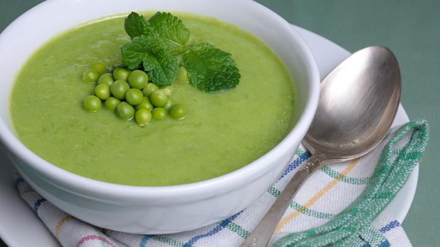

Easy Pea and Mint Soup

Description
This delicious and super simple soup is the perfect meal when you want something quick and easy after a long day of work. With next to no prep it is ready to enjoy in no time.
Ingredients
- 800g of frozen Peas
- one medium brown/red onion
- two cloves of garlic minced
- olive oil 1 tablespoon
- vegetable stock 1.2 ltr
- one jar of mint sauce
- grated parmesan (optional)
Steps
- dice the onion and gently fry in a large pot on a low heat in the olive oil until soft and translucent
- add the minced garlic and fry for anothe minute
- add 600g of peas and the mint sauce stir to mix, coating the peas
- add the 1ltr of stock and stir
- bring to the boil and simmer for 10 minutes
- with a stick blender, blend the soup
- add the remaining stock and peas
- return to the heat and cook for a further 5 minutes until the freshly added peas are cooked through
- serve with a generous sprinkling of parmesan if using